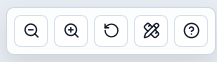
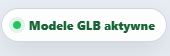
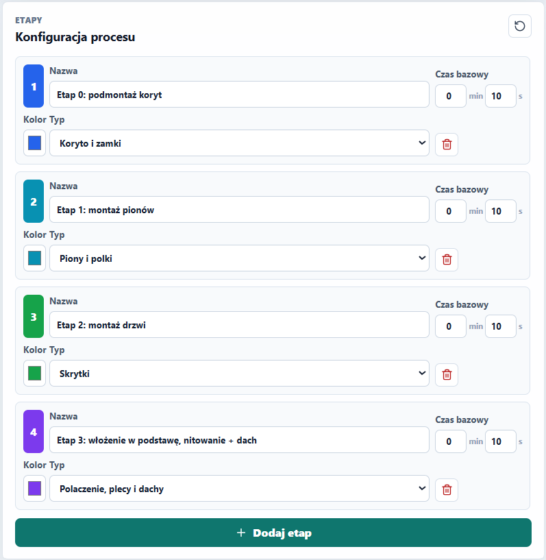
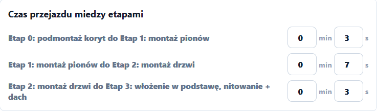
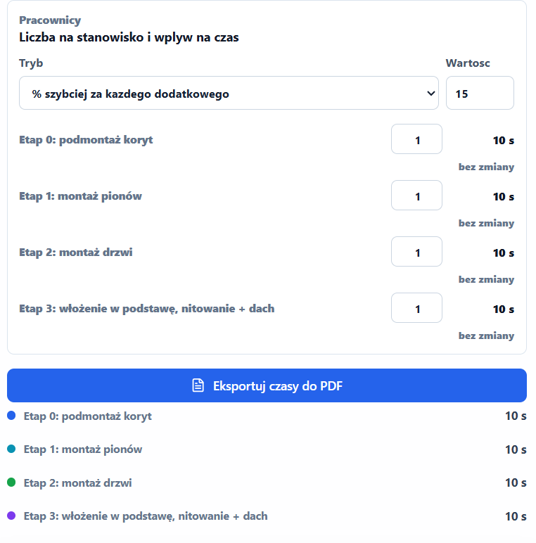
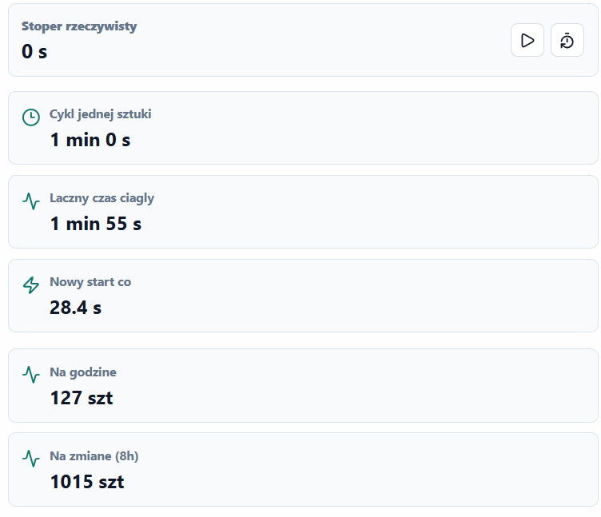
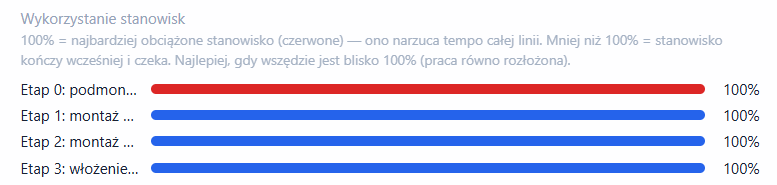
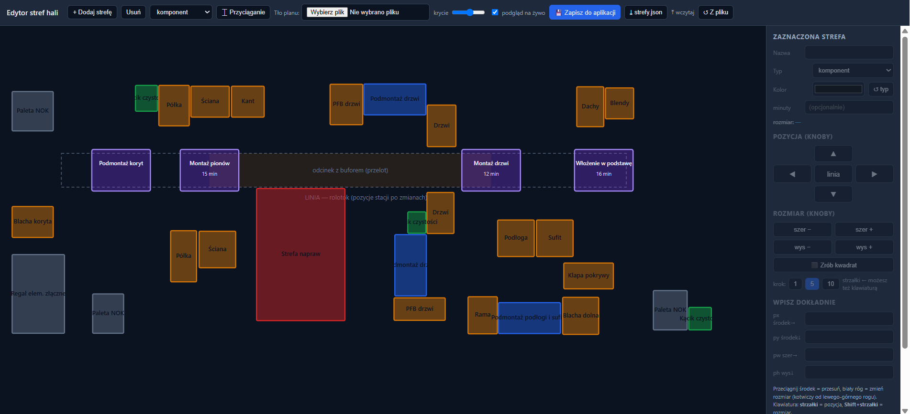

Symulator linii montażu paczkomatów - do planowania, nie do sterowania.
Aplikacja pokazuje w 3D, jak paczkomat przechodzi przez kolejne stanowiska montażowe. Zmieniasz czasy, liczbę pracowników i układ hali - a aplikacja od razu przelicza przepustowość linii (ile sztuk na godzinę / na zmianę) i pokazuje, które stanowisko ma bottleneck.
Strona działa w każdej przeglądarce, bez instalacji:
https://linia-produkcyjna-paczkomat.vercel.app/

Kamerą sterujesz myszką: lewy przycisk = obrót, prawy = przesunięcie, kółko = zoom.

GLB to format plików 3D. W nich zapisane są rzeczywiste modele CAD części paczkomatu (koryta, zamki, ściany, drzwi, dach…). Wskaźnik w prawym górnym rogu mówi, czy udało się je pobrać:
Strona jest statyczna - nie ma bazy danych. Zmiany zapisują się w Twojej przeglądarce.
| Sytuacja | Czy ustawienia przetrwają? |
|---|---|
| Zamknięcie karty / przeglądarki, restart komputera | ✓ Tak |
| Powrót na stronę następnego dnia (ta sama przeglądarka) | ✓ Tak |
| Otwarcie strony na innym komputerze lub w innej przeglądarce | ✗ Nie - tam są osobne ustawienia |
| Wyczyszczenie historii / danych przeglądarki | ✗ Nie - ustawienia znikają |
| Tryb incognito | ✗ Nie nic się nie zapisuje |
config/strefy.json przy wdrożeniu).
Od tej chwili każdy komputer zobaczy nowy układ.
Paczkomat jedzie rolotokiem przez 4 stanowiska. Linia kończy się na etapie 4: postawienie na podstawę, nitowanie i montaż dachu.
| Stanowisko | Praca |
|---|---|
| E1 Podmontaż koryt | Składanie koryt i zamków - początek linii. |
| E2 Montaż pionów | Piony i półki - powstaje szkielet skrytek. |
| Bufor | Odcinek przelotowy między E2 a E3. Gotowe sztuki czekają tu, aż zwolni się E3. W wizualizacji 3D poznasz go po szarym kolorze rolek; reszta rolotoku ma rolki jasne. |
| E3 Montaż drzwi | Montaż drzwi skrytek. |
| E4 Włożenie w podstawę | Obie połowy paczkomatu są stawiane do pionu, wkładane w podstawę i nitowane, dochodzi dach. Tu kończy się linia. |

Każdy etap ma nazwę, czas bazowy, kolor i typ. Typ decyduje o animacji w 3D (np. „Koryto i zamki”, „Piony i polki”, „Skrytki”…). Przycisk ↺ przywraca domyślny proces.
Wszystko liczy się z czasów etapów, czasów przejazdu i liczby pracowników.



| Metryka | Znaczenie |
|---|---|
| Cykl jednej sztuki | Ile czasu mija od wejścia sztuki na linię do zejścia gotowej (praca + przejazdy + ewentualne czekanie). |
| Nowy start co | Co ile linia może wypuścić kolejną sztukę. Równe czasowi bottlenecka - nie da się szybciej. |
| Łączny czas ciągły | Czas wyprodukowania całej serii („Liczba paczkomatów”). |
| Na godzinę / na zmianę (8h) | Przepustowość przy pracy ciągłej. |
| Wykorzystanie stanowisk | Paski obciążenia. Czerwony = bottleneck (100%) - to stanowisko narzuca tempo. Krótsze paski = stanowisko czeka. Ideał: wszędzie blisko 100%. |

Niebieski przycisk „Eksportuj czasy do PDF” (pod sekcją „Pracownicy”) tworzy gotowy raport z bieżących ustawień:
Kolorowe pola wokół linii (magazyny, podmontaże, naprawa…) rysujesz w osobnym edytorze.

…/edytor_stref.html. Edytor sam wczyta aktualne strefy.config/strefy.json przy wdrożeniu (patrz sekcja 2).podmontaż komponenty magazyn naprawa kącik czystości a fioletowe prostokąty w edytorze to stałe stanowiska linii (E1–E4), których nie da się przesunąć.
| Pytanie | Odpowiedź |
|---|---|
| Zmieniłem czasy i zniknęły po zmianie komputera. | To normalne - ustawienia żyją w przeglądarce (sekcja 2). Na nowym komputerze ustaw je ponownie albo poproś o wdrożenie wspólnego strefy.json (dotyczy układu hali). |
| Jak wrócić do ustawień domyślnych? | Przycisk ↺ w nagłówku „Konfiguracja procesu” przywraca domyślne etapy i czasy przejazdów. |
| Symulacja chodzi za wolno. | Zmień „Prędkość symulacji” np. na 20× - wyniki liczbowe się nie zmieniają. |
| Skąd czerwone stanowisko na 3D? | To bottleneck - najdłuższy efektywny czas. Tam najpierw ustawia się kolejka. |
| Czy mogę mieć więcej/mniej etapów? | Tak - „Dodaj etap” / ikona kosza w „Konfiguracji procesu”. Uwaga: czasy policzą się poprawnie, ale animacja 3D przy innej liczbie etapów może wyglądać źle (patrz sekcja 3). |
| Jak przekazać wyniki dalej? | „Eksportuj czasy do PDF” - raport z tabelą czasów, bottleneckiem i przepustowością. |
| Kamera w 3D | Lewy przycisk myszy = obrót, prawy = przesunięcie, kółko = zoom. Przycisk ↺ przy lupkach resetuje widok. |